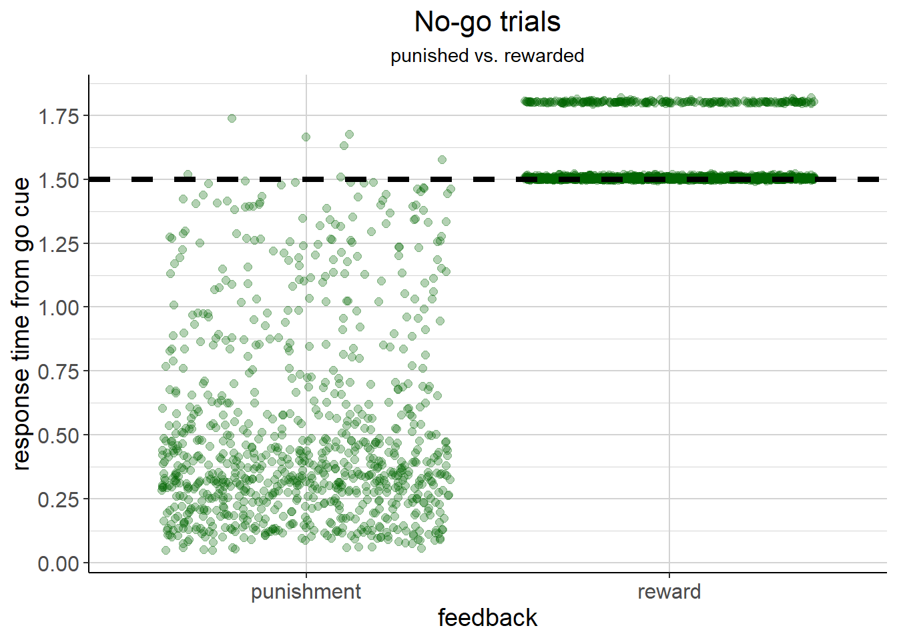
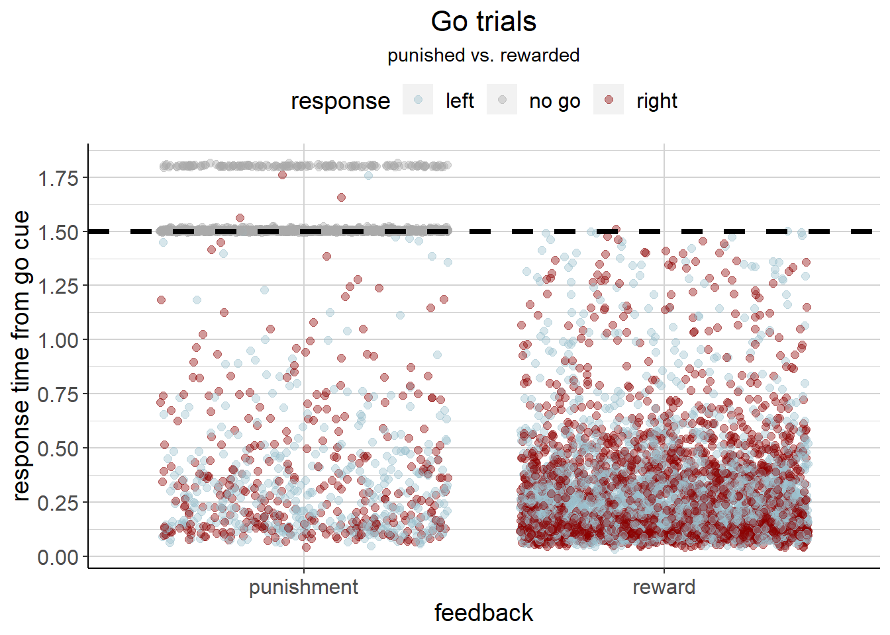
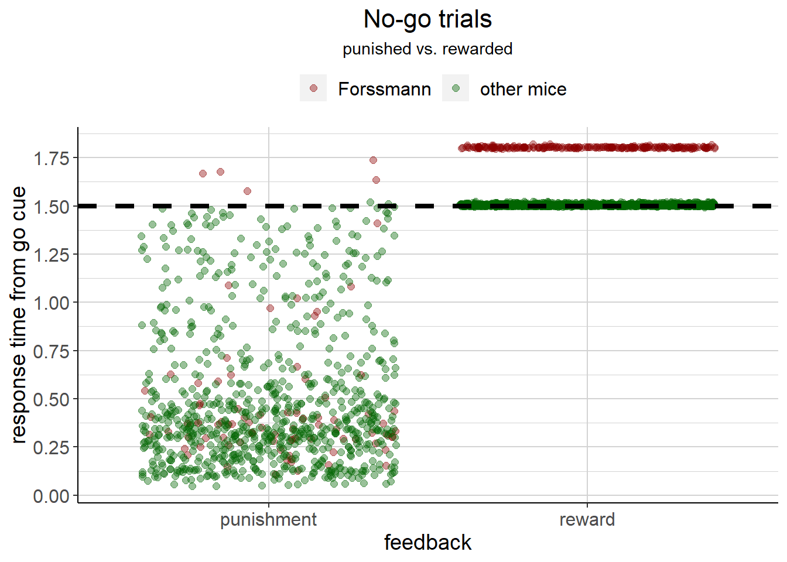
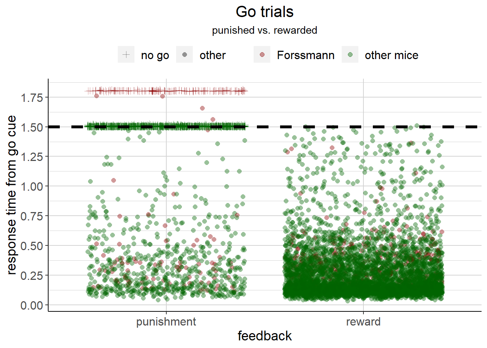

Behavioural Data
The Ultra Unamusing Urchins - Neuromatch Project
1 The Forssmann Situation
Response times for no go trials show a weird pattern. Usually, any response time > 1.5 s should be correct (reward), anything below should be incorrect (punishment).

The same strange pattern occurs for no-go responses in go trials.

We can find out where the two distinct populations of no-go response times are coming from by figuring out when which type (low is < 1.7 s; high is > 1.7 s) occurs when.
Turns out, no-go responses > 1.7 s are associated with one mouse, Forssmann.
| response time | mouse | count |
|---|---|---|
| high | Forssmann | 384 |
| low | Cori | 245 |
| low | Hench | 479 |
| low | Lederberg | 480 |
| low | Moniz | 262 |
| low | Muller | 263 |
| low | Radnitz | 334 |
| low | Richards | 440 |
| low | Tatum | 308 |
| low | Theiler | 110 |
The weird response times occur in sessions 4, 5, 6 and 7, which are all Forssmann’s sessions.
| response time | session | count |
|---|---|---|
| high | 4 | 126 |
| high | 5 | 104 |
| high | 6 | 92 |
| high | 7 | 62 |
| low | 1 | 74 |
| low | 2 | 94 |
Indeed, Forssmann is the culprit. We take him out from now on, since his timing will be messed up.

